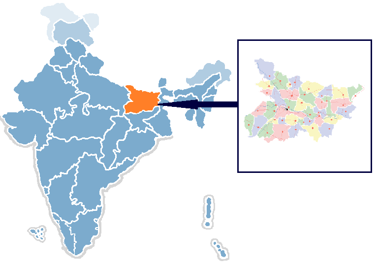

Bihar is in Indo-Gangetic plain so naturally fertile soil is one asset of the state.[citation needed] Thus Indo-Gangetic plain's soil is the backbone of agricultural and industrial development. The Indo-Gangetic plain in Bihar consists of a thick alluvial mantle of drift origin overlying in most part, the siwalik and older tertiary rocks. The soil is mainly little young loam rejuvenated every year by constant deposition of silt, clay and sand brought by streams but mainly by floods in Bihar[14] This soil is deficient in phosphoric acid, nitrogen and humus, but potash and lime are usually present in sufficient quantity.[citation needed] The most common soil in Bihar is Gangetic alluvium of Indo-Gangetic plain region, Piedmont Swamp Soil which is found in northwestern part of West Champaran district and Terai Soil which is found in eastern part of Bihar along the border of Nepal.[15] clay soil, sand soil and loamy soil are common in Bihar.[16]

At the 2011 census, Bihar was the third most populous state of India with a total population of 104,099,452. It was also India's most densely populated state, with 1,106 persons per square kilometre. The sex ratio was 1090 females per 1000 males in the year 2020.[91] Almost 58% of Bihar's population was below 25 years age, which is the highest in India. In 2021, Bihar has had an urbanisation rate of 20%.[20][92] Bihar has an adult literacy rate of 70.9% (79.7% for males and 60.5% for females) in 2017 according to NSC report 2017.[91][93] According to Bihar caste survey 2023, Bihar's literacy rate grew upto 79.8%[94] (which is 18% increase from 61.18% of Census 2011) showing remarkable growth in education sector from past decades. Population increased to 130,725,310 as per the Bihar caste survey conducted in 2023.
| Historical population |
|---|
| year | population | Presentage |
|---|---|---|
| 1901 | 21,243,632 | __ |
| 1911 | 21,567,159 | +1.5% |
| 1921 | 21,358,905 | −1.0% |
| 1931 | 23,438,371 | +9.7% |
| 1941 | 26,302,771 | +12.2% |
| 1951 | 29,085,000 | +10.6% |
| 1961 | 34,841,000 | +19.8% |
| 1971 | 42,126,000 | +20.9% |
| 1981 | 52,303,000 | +24.2% |
| 1991 | 64,531,000 | +23.4% |
| 2001 | 82,999,000 | +28.6% |
| 2011 | 104,099,452 | +25.4% |
| 2023 | 130,725,310 | +25.6% |
The History of Bihar is one of the most varied in India. Bihar consists of three distinct regions, each has its own distinct history and culture. They are Magadha, Mithila and Bhojpur.[1] Chirand, on the northern bank of the Ganga River, in Saran district, has an archaeological record dating from the Neolithic age (c. 2500 – 1345 BC).[2][3] Regions of Bihar—such as Magadha, Mithila and Anga—are mentioned in religious texts and epics of ancient India. Mithila is believed to be the centre of Indian power in the Later Vedic period (c. 1100 – 500 BC). Mithila first gained prominence after the establishment of the ancient Videha Kingdom.[4] The kings of the Videha were called Janakas. A daughter of one of the Janaks of Mithila, Sita, is mentioned as consort of Lord Rama in the Hindu epic Ramayana.[5] The kingdom later became incorporated into the Vajjika League which had its capital in the city of Vaishali, which is also in Mithila.[6]
Magadha was the centre of Indian power, learning and culture for about a thousand years. One of India's greatest empires, the Maurya Empire, as well as two major pacifist religions, Buddhism and Jainism, arose from the region that is now Bihar.[7] Empires of the Magadha region, most notably the Maurya unified large parts of the Indian subcontinent under their rule.[8] Their capital Pataliputra, adjacent to modern-day Patna, was an important political, military and economic centre of Indian civilisation during the ancient and classical periods of Indian history. Many ancient Indian texts, aside from religious epics, were written in ancient Bihar. The play Abhijñānaśākuntala being the most prominent.
The present-day region of Bihar overlaps with several pre-Mauryan kingdoms and republics, including Magadha, Anga and the Vajjika League of Mithila. The latter was one of the world's earliest known republics and had existed in the region since before the birth of Mahavira (c. 599 BC).[9][10]
The Pala Empire also made their capital at Pataliputra once during Devapala's rule. After the Pala period, Bihar came under the control of various kingdoms. The Karnat dynasty came into power in the Mithila region in the 11th century and they were succeeded by the Oiniwar dynasty in the 14th century. Aside from Mithila, there were other small kingdoms in medieval Bihar. The area around Bodh Gaya and much of Magadha came under the Buddhist Pithipatis of Magadha. The Khayaravala dynasty were present in the southwestern portions of the state until the 13th century.[11] For much of the 13th and 14th centuries, parts of Western Bihar were under the control of the Jaunpur Sultanate. These kingdoms were eventually supplanted by the Delhi Sultanate who in turn were replaced by the Sur Empire. After the fall of the Suri dynasty in 1556, Bihar came under the Mughal Empire and later was the staging post for the British colonial Bengal Presidency from the 1750s and up to the war of 1857–58. On 22 March 1912, Bihar was carved out as a separate province in the British Indian Empire. Since 1947 independence, Bihar has been an original state of the Indian Union.[12]